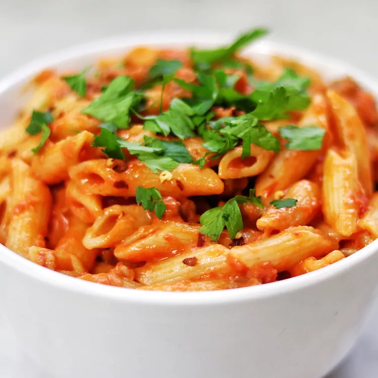

Penne Vodka

Description
This spicy vodka pasta is a nice change from your typical tomato sauce.
If you're worried about the alcohol, don't be! It cooks off and cannot be tasted. It simply helps to enhance the flavors.
Ingredients
- 1 pound uncooked penne pasta
- ¼ cup extra virgin olive oil
- 2 (3.5 ounce) links sweet Italian sausage
- 4 cloves garlic, minced
- ½ teaspoon crushed red pepper flakes
- 1 (28 ounce) can crushed tomatoes
- ¾ teaspoon salt
- ½ cup heavy whipping cream
- 2 tablespoons vodka
- ¼ cup chopped fresh parsley
Steps
- Bring a large pot of lightly salted water to a boil.
Add penne and cook, stirring occasionally, until tender yet firm to the bite, about 11 minutes. Drain and set aside.
- Heat oil in a large skillet over medium heat. Remove casing from sausage and add to the skillet.
Cook and stir until crumbly and brown, 5 to 7 minutes. Add garlic and red pepper flakes; cook and stir until garlic is golden brown.
- Add tomatoes and salt; bring to boil. Reduce heat and simmer for 15 minutes.
- Add cream and vodka; bring to boil. Reduce heat to low and add pasta; toss for 1 minute. Stir in parsley; serve warm.